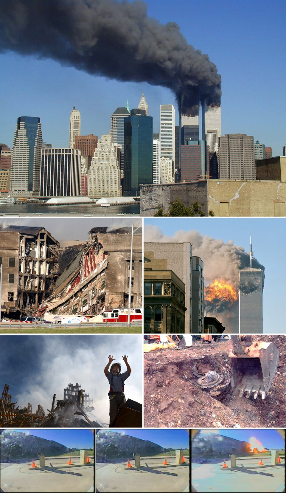

Atentado sin precedentes: derrumbadas las Torres Gemelas de Nueva York
Dos aviones de pasajeros secuestrados fueron estrellados contra el World Trade Center, que se desplomó ante las cámaras del planeta entero; un tercero golpeó el Pentágono y un cuarto cayó en Pensilvania. Se temen miles de muertos.

A las 8:46 de la mañana, un avión comercial se incrustó en la torre norte del World Trade Center, y durante diecisiete minutos el mundo quiso creer que era un accidente. A las 9:03, ante las cámaras que ya transmitían en directo, un segundo aparato entró en la torre sur, y la palabra accidente murió para siempre. Poco después, otro avión golpeaba el Pentágono en Washington, y un cuarto, que se presume dominado por la rebelión de sus propios pasajeros, se estrellaba en un campo de Pensilvania sin llegar a su blanco. Estados Unidos, atacado en su suelo como nunca en su historia moderna, cerró su cielo y contuvo el aliento.
Lo peor vino a media mañana. La torre sur se desplomó sobre sí misma a las 9:59; la norte, a las 10:28. Donde estuvieron los dos edificios más famosos del planeta quedó una montaña humeante y una nube que persiguió a los sobrevivientes por las calles de Manhattan, blanqueados de ceniza como fantasmas. Adentro había miles de oficinistas y cientos de bomberos y policías que subían mientras todos bajaban; a esta hora nadie se atreve a contar los muertos, aunque se teme que sean varios miles. Los hospitales de la ciudad esperan heridos que, en su mayoría, no llegarán.
Lo que se sabe del método hiela por su sencillez: diecinueve hombres armados apenas con cuchillas de cartonero tomaron cuatro vuelos que cruzaban el continente —elegidos, se presume, por despegar cargados de combustible— y convirtieron a la aviación civil, orgullo de la rutina moderna, en artillería contra su propio pueblo. La pista de Al Qaeda no nace hoy: la red del millonario saudita refugiado en Afganistán ya voló dos embajadas americanas en África en el 98 y atacó un destructor en Yemen hace un año, y sus comunicados prometían llevar la guerra a suelo americano. La pregunta que Washington no podrá esquivar es cómo diecinueve hombres, varios de ellos fichados en los archivos de sus propias agencias, abordaron cuatro aviones la misma mañana.
Nueva York vivió el resto del día en una irrealidad de película muda: decenas de miles de personas cruzando a pie los puentes de Brooklyn y de Manhattan, blancas de polvo, en un éxodo silencioso que nadie organizó y nadie desobedeció; colas de horas para donar sangre frente a hospitales que esperaban en vano; y hacia la tarde, pegados en cabinas y paredes, los primeros carteles con fotografías y la palabra «missing», que en los próximos días empapelarán la ciudad. Sobre todo, el silencio del cielo: por primera vez no vuela nada sobre los Estados Unidos, salvo los cazas de patrulla, y ese zumbido ausente, dicen los neoyorquinos, es lo que más fuerte se oye.
El presidente Bush, trasladado de base en base durante horas, habló a la noche desde la Casa Blanca para prometer que se hallará y castigará a los responsables; los indicios primeros apuntan a la red del saudita Osama bin Laden. Las bolsas no abrieron, las fronteras se cerraron, y de Buenos Aires a Tokio no hubo esta tarde otra pantalla ni otra conversación. Sépalo el lector de los años venideros: el siglo XXI, que administrativamente empezó hace nueve meses, empezó de verdad hoy, y nadie de los que vimos caer las torres en directo podrá ya recordar el mundo de ayer sin este humo en el medio.